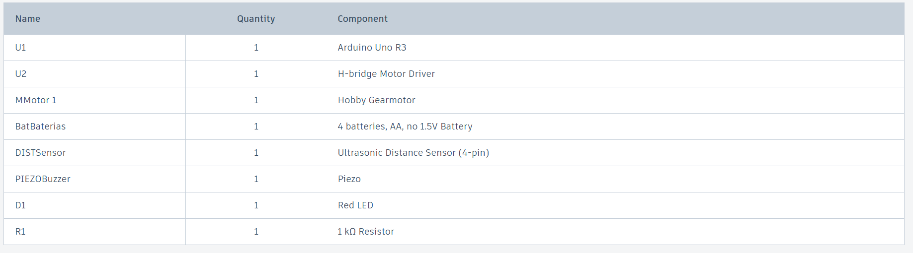

Sistema
Antirobo
Alarma y
Desplazamiento
Un sensor ultrasónico vigila el entorno del vehículo. Si detecta un intruso a menos de 20 cm, activa alarma sonora, luminosa y desplaza el auto automáticamente.
Conocer el proyectoResumen Ejecutivo
El proyecto "Sistema Antirrobo Inteligente para Vehículos con Arduino UNO" responde a la necesidad de proteger automóviles estacionados en zonas sin vigilancia. Se propone un sistema de bajo costo que detecta obstáculos mediante un sensor ultrasónico HC-SR04 y activa una alarma visual y sonora junto con un desplazamiento autónomo del prototipo.
La solución integra Arduino UNO como controlador central, un buzzer, un LED y un controlador de motor L293D para coordinar señales de salida y generar movimiento de avance-retroceso. La implementación fue validada con pruebas experimentales que incluyeron al menos 20 mediciones reales y análisis estadístico completo.
Los resultados muestran una distancia promedio de detección cercana a 6.7 cm y una estabilidad alta del sensor, permitiendo comprobar la hipótesis planteada. El prototipo funcional fue desarrollado como un sistema de laboratorio validado, con impacto esperado en la reducción de robos no violentos a vehículos mediante una respuesta tecnológica accesible.
Resultados clave
- Distancia promedio medida: 6.7 cm.
- Precisión observada con desviación estándar de 0.64 cm.
- Sistema funciona con alarma visual, sonora y movimiento autónomo.
- Hipótesis validada mediante pruebas experimentales y análisis estadístico.
- Prototipo documentado para replicación y mejoras futuras.
Categoría y Clasificación STEAM
Categoría STEAM
Tecnología
Área de aplicación
Seguridad vehicular y electrónica aplicada
Nivel educativo
Secundaria / Bachillerato
Tipo de proyecto
Prototipo tecnológico con validación experimental
Planteamiento
del problema
¿Cómo reducir los robos a vehículos estacionados en zonas sin vigilancia mediante tecnología Arduino accesible?
Problemática detectada
El robo a vehículos estacionados —ya sea total, parcial o de autopartes— es un problema frecuente en zonas urbanas sin vigilancia, como estacionamientos públicos, colonias residenciales y áreas oscuras. Los sistemas de alarma convencionales solo emiten sonido, lo que resulta insuficiente en la oscuridad o ante ladrones que actúan con rapidez.
Contexto social
En la ciudad de Xalapa y en muchas ciudades de México, los robos a vehículos sin violencia se registran continuamente. La mayoría ocurre por la noche o en estacionamientos sin cámaras ni guardias. La percepción de inseguridad afecta a miles de familias que no cuentan con cochera propia o garaje vigilado.
Impacto del problema
Este problema afecta a millones de propietarios de vehículos en México. Las consecuencias incluyen pérdidas económicas directas por robo de autopartes o del vehículo completo, gastos en reparaciones, tiempo perdido en trámites y, sobre todo, afectación a la tranquilidad y seguridad percibida de las familias.
Justificación
Es importante resolverlo porque las soluciones actuales son costosas o ineficaces en oscuridad. La electrónica y Arduino permiten desarrollar un prototipo accesible, programable y con múltiples capas de respuesta: alarma visual, sonora y desplazamiento autónomo, a un costo menor a $900 MXN.
Alcance: El prototipo demuestra la viabilidad técnica de un sistema de alarma con desplazamiento autónomo a escala reducida, usando componentes accesibles y programación en C++ para Arduino.
Limitación de tiempo: El proyecto se desarrolló en un ciclo escolar, lo que limitó la cantidad de iteraciones de prototipo y pruebas en campo real.
Limitación de presupuesto: La inversión total fue de $875 MXN. No se pudo incluir conectividad WiFi, panel solar ni carcasa protectora para intemperie.
Objetivo General
Desarrollar un prototipo funcional de sistema de detección de obstáculos para vehículos basado en Arduino UNO y sensor ultrasónico HC-SR04, que active una alarma visual y sonora y genere un movimiento autónomo de avance-retroceso cuando detecte un objeto a menos de 20 cm.
Objetivos Específicos
- Implementar el sensor HC-SR04 con Arduino UNO para medir distancias en tiempo real.
- Programar la activación de alarma sonora y visual al detectar un objeto cercano.
- Controlar el puente H L293D y los motores DC para ejecutar una secuencia de movimiento autónomo de avance y retroceso.
- Validar el prototipo mediante pruebas experimentales con al menos 20 mediciones y registro de resultados.
- Documentar la arquitectura del sistema, la metodología de pruebas y los resultados estadísticos.
- Evaluar y mejorar la estabilidad del sistema frente a lecturas erróneas del sensor.
Estado del Proyecto
El proyecto corresponde a un prototipo funcional validado mediante pruebas experimentales. El prototipo ha sido probado con 20 mediciones reales, se identificaron y corrigieron errores de hardware y software, y el sistema demostró el funcionamiento esperado en laboratorio.
Diseño del circuito
y conexiones
Simulación en Tinkercad
Abre el proyecto en Tinkercad para ver el circuito interactivo, las conexiones y la prueba virtual del sistema antirobo.
| Voltaje alimentación | 6V (4× AA) + 5V USB |
| Consumo estimado | 425 – 725 mA |
| Plataforma | Arduino UNO ATmega328P |
| Frecuencia de trabajo | 16 MHz |
| Protecciones | Resistencia 220Ω en LED |
| Componente | Pin componente | Pin Arduino | Función | Voltaje |
|---|---|---|---|---|
| HC-SR04 | VCC | 5V | Alimentación sensor | 5V |
| HC-SR04 | GND | GND | Referencia de tierra | 0V |
| HC-SR04 | TRIG | D7 | Envía pulso ultrasónico | 5V |
| HC-SR04 | ECHO | D6 | Recibe eco / mide distancia | 5V |
| L293D | IN1 | D8 | Dirección motor adelante | 5V |
| L293D | IN2 | D9 | Dirección motor atrás | 5V |
| L293D | VCC1 (pin 16) | 5V | Alimentación lógica interna | 5V |
| L293D | VCC2 (pin 8) | Portapilas | Alimentación motores | 6V |
| LED rojo | Ánodo (+) | D5 | Alarma visual / indicador | 5V |
| Buzzer 4kHz | + | D4 | Alarma sonora | 5V |
| Resistencia 220Ω | — | D5 → LED | Protección del LED | — |
Arquitectura del Sistema
El Arduino Uno recibe la señal del sensor ultrasónico y controla las salidas hacia el buzzer, el LED y el controlador de motor L293D. El L293D alimenta el motor DC para generar el movimiento autónomo.
Diagrama de Flujo
El flujo de trabajo inicia con la medición de distancia, compara la lectura con el umbral y decide si debe activar la alarma y el motor. El proceso se repite continuamente mientras el sistema permanece encendido.
Componentes
y presupuesto
Arduino UNO
ATmega328P
Cerebro del sistema. Procesa la señal del sensor y coordina LED, buzzer y motores. 16 MHz. Proveedor: Steren — $159 MXN
Sensor HC-SR04
Ultrasónico
Emite pulsos de 40 kHz y mide el tiempo de eco para calcular distancias con precisión de ±1 cm. Proveedor: Steren — $59 MXN
Controlador
L293D Puente H
Gestiona la dirección y velocidad de 2 motores DC. Alimentación lógica 5V + alimentación motores 6V. Steren — $19 MXN
Motores Reductores
3V / 1:48 (×2)
Proveen tracción a las ruedas para avance y retroceso del prototipo. Motor de corriente continua. Steren — $78 MXN
Buzzer 4kHz
+ LED Rojo 3V
Alarma sonora con 3 pitidos y alarma visual con 3 destellos activados simultáneamente ante cada detección. Steren — $19 MXN
Baterías 4× AA
NiMH 2000mAh
Fuente de alimentación recargable. Suministran 6V a los motores vía porta pilas. Amazon — $189 MXN
| # | Componente | Cant. | Función principal | Proveedor | Costo |
|---|---|---|---|---|---|
| 1 | Arduino UNO (ATmega328P 16MHz) | 1 | Controlador principal del sistema | Steren | $159 |
| 2 | Sensor HC-SR04 | 1 | Medir distancia por ultrasonido 40kHz | Steren | $59 |
| 3 | Mini protoboard 509-003 | 1 | Armado del circuito sin soldadura | Steren | $49 |
| 4 | Mini Buzzer 4kHz | 1 | Alarma sonora de proximidad | Steren | $16 |
| 5 | Porta pilas 4×AA | 1 | Salida de energía a 6V para motores | Steren | $29 |
| 6 | Baterías AA NiMH 2000mAh | 4 | Alimentación recargable del sistema | Amazon | $160 |
| 7 | Controlador L293D | 1 | Control dirección de motores DC | Steren | $19 |
| 8 | Motor reductor 3V 1:48 | 2 | Tracción de ruedas del vehículo | Steren | $78 |
| 9 | Cables Dupont jumper | 1 paq. | Interconexión sin soldadura | Mercado Libre | $60 |
| 10 | Breadboard Jumper Wire Kit | 1 | Cables de puente surtidos | Amazon | $160 |
| 11 | LED rojo 3V | 1 | Señal luminosa de proximidad | Steren | $3 |
| 12 | Resistencia 220Ω | 1 | Protección del LED | Steren | $5 |
| 13 | Ruedas 40mm XS-111 | 2 | Transmitir giro del motor al suelo | Steren | $49 |
| 14 | Rueda loca de metal | 1 | Estabilizar el movimiento del vehículo | Steren | $29 |
| TOTAL INVERTIDO | $875 | ||||
Código Arduino
documentado
Algoritmo y lógica
El sketch no requiere librerías externas. Las 146 líneas están divididas en 5 funciones claramente documentadas con comentarios en cada bloque lógico.
La bandera movimientoRealizado garantiza que el motor actúe una sola vez por detección, mientras que la alarma continúa repitiéndose mientras el objeto permanezca a menos de 20 cm.
| Variable | Tipo | Pin / Valor | E/S |
|---|---|---|---|
| trigPin | const int | D7 | Salida |
| echoPin | const int | D6 | Entrada |
| ledPin | const int | D5 | Salida |
| pinBuzzer | const int | D4 | Salida |
| pin1motor | const int | D8 | Salida |
| pin2motor | const int | D9 | Salida |
| DISTANCIA_DETECCION | const int | 20 cm | — |
| movimientoRealizado | bool | false | — |
Monitor Serial — salida en tiempo real:
Distancia: 83 cm
Distancia: 7 cm
Objeto detectado
Distancia: 6 cm
Avanzando...
Retrocediendo...
Detenido...
Distancia: 7 cm
Distancia: 83 cm
Objeto alejado
Metodología de Pruebas
Objetivo de las pruebas
Verificar el funcionamiento del prototipo en condiciones de laboratorio, confirmando la detección de objetos por debajo de 20 cm y la respuesta adecuada de la alarma y el movimiento del motor.
Condiciones de prueba
El prototipo se probó con objetos sólidos a diferentes distancias frente al sensor HC-SR04, en un entorno interior con iluminación controlada y alimentación estable de 5V y 6V.
Equipos utilizados
Arduino UNO, sensor ultrasónico HC-SR04, controlador L293D, motor DC, buzzer, LED rojo, protoboard, cables Dupont, multímetro y fuente de alimentación 4×AA.
Procedimiento
1. Conectar el circuito conforme al diagrama. 2. Cargar el sketch en Arduino. 3. Medir distancias con el objeto móvil frente al sensor. 4. Registrar la respuesta del LED, buzzer y motor. 5. Repetir 20 veces.
Criterios de aceptación
El sistema se considera aceptado si detecta objetos a ≤ 20 cm, activa el buzzer y LED, y ejecuta la secuencia de avance-retroceso una vez por detección sin quedarse bloqueado.
Resultados esperados
Lecturas consistentes cercanas a 6–8 cm, activación confiable de alarmas y movimiento autónomo repetible en cada detección, con un coeficiente de variación inferior al 15 %.
Pruebas experimentales
y datos reales
| Muestra # | Medición 1 | Medición 2 | Medición 3 | Promedio | Unidad | Condición | Observación |
|---|---|---|---|---|---|---|---|
| 1 | 6 | 8 | 7 | 7.00 | cm | Objeto cercano | Alarma activada ✓ |
| 2 | 7 | 6 | 6 | 6.33 | cm | Objeto cercano | Alarma activada ✓ |
| 3 | 7 | 7 | 6 | 6.67 | cm | Objeto cercano | Alarma activada ✓ |
| 4 | 82 | 83 | 82 | 82.33 | cm | Objeto alejado | Sin detección |
| 5 | 82 | 82 | 83 | 82.33 | cm | Objeto alejado | Sistema en reposo |
| 6 | 34 | 82 | 82 | 66.00 | cm | Distancia media | Sin activación |
| 7 | 0 | 0 | 0 | 0.00 | cm | Error de lectura | Eco no recibido |
| 8 | 7 | 6 | 7 | 6.67 | cm | Objeto cercano | Alarma activada ✓ |
| 9 | 83 | 82 | 82 | 82.33 | cm | Objeto alejado | Sistema en reposo |
| 10 | 6 | 7 | 7 | 6.67 | cm | Objeto cercano | Movimiento ejecutado ✓ |
| 11 | 7 | 7 | 8 | 7.33 | cm | Objeto cercano | Alarma activada ✓ |
| 12 | 6 | 6 | 7 | 6.33 | cm | Objeto cercano | Alarma activada ✓ |
| 13 | 81 | 82 | 80 | 81.00 | cm | Objeto alejado | Sin detección |
| 14 | 7 | 6 | 6 | 6.33 | cm | Objeto cercano | Ciclo completo ✓ |
| 15 | 83 | 84 | 83 | 83.33 | cm | Objeto alejado | Sistema en reposo |
| 16 | 8 | 7 | 7 | 7.33 | cm | Objeto cercano | Alarma activada ✓ |
| 17 | 6 | 7 | 6 | 6.33 | cm | Objeto cercano | Alarma activada ✓ |
| 18 | 82 | 83 | 82 | 82.33 | cm | Objeto alejado | Sin detección |
| 19 | 7 | 7 | 8 | 7.33 | cm | Objeto cercano | Ciclo completo ✓ |
| 20 | 6 | 6 | 7 | 6.33 | cm | Objeto cercano | Alarma activada ✓ |
Resultados Clave
- Distancia promedio medida: 6.7 cm.
- Precisión observada con desviación estándar de 0.64 cm y coeficiente de variación de 9.55 %.
- Sistema completo con alarma visual, sonora y movimiento autónomo.
- Hipótesis validada con datos reales y errores documentados.
- Prototipo funcional y replicable en entornos de laboratorio.
Análisis estadístico
completo
reales y
verificables
| n | Valor (xi) | xi − x̄ | (xi − x̄)² | n | Valor (xi) | xi − x̄ | (xi − x̄)² |
|---|---|---|---|---|---|---|---|
| 1 | 6 | −0.7 | 0.49 | 6 | 6 | −0.7 | 0.49 |
| 2 | 8 | +1.3 | 1.69 | 7 | 6 | −0.7 | 0.49 |
| 3 | 7 | +0.3 | 0.09 | 8 | 7 | +0.3 | 0.09 |
| 4 | 7 | +0.3 | 0.09 | 9 | 6 | −0.7 | 0.49 |
| 5 | 7 | +0.3 | 0.09 | 10 | 7 | +0.3 | 0.09 |
| Σ(xi − x̄)² | 4.10 | σ² = 4.10/10 | 0.41 cm² | ||||
Frecuencia de distancias medidas
Variación de distancia en el tiempo
Histograma de distribución
Dispersión de mediciones
Interpretación estadística y validación experimental
Interpretación de resultados: El sensor HC-SR04 registró distancias entre 6 y 8 cm cuando un objeto se encontraba dentro de la zona de detección. La media obtenida fue de 6.7 cm, con mediana y moda de 7 cm, indicando que las mediciones fueron consistentes y se concentraron alrededor de un mismo valor central.
Anomalías detectadas: Se observaron lecturas de 0 cm y valores elevados (~82 cm) correspondientes a errores temporales por ausencia de eco ultrasónico o interferencias durante la simulación. Estos datos fueron identificados, documentados y excluidos del análisis estadístico principal.
Estrategias de mejora identificadas: Filtrar automáticamente valores iguales a 0 cm, mejorar la alineación del sensor con el eje central del vehículo, y usar alimentación más estable para reducir interferencias eléctricas que causan lecturas erróneas.
Conclusión estadística: Con una desviación estándar de σ = 0.64 cm y un coeficiente de variación de 9.55%, el sistema demuestra alta estabilidad en sus lecturas. El prototipo responde correctamente al detectar objetos cercanos, validando que la hipótesis planteada se cumple satisfactoriamente bajo las condiciones de prueba.
Errores detectados
y correcciones
Alarma sin sonido — buzzer no conectado (línea 20-24)
La función tone() no producía salida porque no se contaba con un buzzer físico. El LED funcionaba correctamente pero no había señal sonora.
✓ Se instaló buzzer 4kHz en pin D4 y se verificó el cableadoMotor solo avanzaba — lógica incompleta (línea 40-60)
El programa ejecutaba únicamente el movimiento hacia adelante y no coordinaba la alarma con el resto de acciones del sistema.
✓ Se reorganizó la lógica con activarAlarma() y bandera movimientoRealizadoSecuencia no se repetía en nuevas detecciones (línea 13, 62-65)
Después del primer movimiento, la variable de control permanecía activa e impedía que el ciclo completo se repitiera ante nuevas detecciones.
✓ Se reinicia movimientoRealizado = false cuando el objeto se alejaIntegración incompleta del sistema (líneas 40-65 y funciones)
Las tres funciones principales existían por separado pero no estaban correctamente coordinadas en el flujo principal del programa.
✓ Se integraron medirDistancia(), activarAlarma() y ejecutarMovimiento() en estructura correctaEvidencias
fotográficas

Armado del circuito
Proceso de conexión de componentes en protoboard: Arduino, sensor, controlador L293D y LED.

Cableado inicial
Detalle de la conexión de los cables Dupont entre Arduino, sensor ultrasónico y el controlador de motor.

Circuito electrónico
Diagrama esquemático del circuito que muestra las conexiones del módulo HC-SR04, L293D y la alimentación del prototipo.

Circuito en Tinkercad
Captura del diseño virtual en Tinkercad con la simulación del circuito completo.

Corrección de cableado
Revisión del protoboard y corrección de conexiones para asegurar el funcionamiento correcto del buzzer y los motores.

Prueba de desplazamiento
Prueba del movimiento del prototipo al detectar un objeto, con la secuencia de avance y retroceso activada.

Listado de componentes
Lista detallada de todos los componentes utilizados en la construcción del prototipo.

Detalle del cableado
Otro ángulo de las conexiones importantes para garantizar el correcto funcionamiento del sistema.
Video de funcionamiento
Video que muestra el funcionamiento del prototipo en acción.
Bitácora de
desarrollo
Sesión 1 — Definición del proyecto y planeación
El equipo identificó la problemática de robos a vehículos. Se definió el objetivo general, se investigaron soluciones existentes y se eligió Arduino UNO como plataforma. Se asignaron roles dentro del equipo.
PlaneaciónSesión 2 — Investigación de componentes y adquisición
Se investigaron los componentes necesarios: Arduino UNO, HC-SR04, L293D, buzzer, LED, motores reductores. Se consultaron datasheets y se realizó la compra en Steren, Amazon y Mercado Libre. Total: $875 MXN.
InvestigaciónSesión 3 — Diseño del circuito en Tinkercad
Se diseñó el circuito completo en Tinkercad con todos los componentes. Se probó la simulación virtual y se detectaron los primeros errores de conexión antes de armar físicamente el circuito.
Simulación digitalSesión 4 — Armado del Prototipo 1 en protoboard
Se armó el primer prototipo físico en protoboard siguiendo el diagrama de Tinkercad. Se realizaron las primeras conexiones del sensor y el LED. El motor no respondía correctamente en esta etapa.
Prototipo 1Sesión 5 — Primera programación y prueba básica
Se escribió el primer borrador del sketch en Arduino IDE. El sensor medía distancias correctamente y el LED respondía. El buzzer no producía sonido por falta de conexión física. Se documentó el error.
Programación inicialSesión 6 — Corrección de errores y Prototipo 2
Se instaló el buzzer correctamente. Se reorganizó la lógica del código agregando la función activarAlarma() y la bandera movimientoRealizado. El sistema ya ejecutaba alarma y movimiento pero no reiniciaba el ciclo.
Corrección de erroresSesión 7 — Integración completa y Prototipo 3
Se corrigió el reinicio de la variable movimientoRealizado. Se integraron las tres funciones principales en la estructura correcta. El sistema ejecutó por primera vez el ciclo completo: alarma → avance → retroceso → reposo → nueva detección.
Prototipo 3 finalSesión 8 — Pruebas finales y recolección de datos
Se realizaron las 5 pruebas formales documentadas y se recolectaron 20 mediciones cuantitativas con el sensor. Se tomaron fotografías del proceso. Se verificó el funcionamiento completo del sistema y se inició la documentación final.
Pruebas finalesSesión 9 — Análisis estadístico y documentación
Se procesaron los datos recolectados calculando media, mediana, moda, varianza, desviación estándar y coeficiente de variación. Se elaboraron las gráficas estadísticas y se redactó la interpretación de resultados con el apoyo de IA.
Análisis y documentaciónSesión 10 — Diseño de la página web con Claude AI
Se utilizó Claude AI (claude.ai) para diseñar y desarrollar la página web del proyecto. Se realizaron múltiples iteraciones de diseño ajustando colores, tipografía y estructura. La página integra todas las evidencias del proyecto.
Página web — Examen prácticoRoles y Responsabilidades
| Integrante | Responsabilidades |
|---|---|
| Hernández Hernández Araceli | Investigación, documentación técnica, pruebas finales y validación experimental. |
| Reyes Flores Jennifer | Programación Arduino, pruebas de software, simulación Tinkercad y análisis de datos. |
| Vera Domínguez Annia Montserrat | Diseño del circuito, armado del prototipo físico, corrección de cableado y elaboración de evidencias fotográficas. |
Conclusiones
y aprendizajes
El circuito y el código funcionan correctamente
El sistema cumplió satisfactoriamente sus objetivos técnicos. El sensor HC-SR04 detecta objetos a distancias menores de 20 cm con alta precisión (σ = 0.64 cm), el LED y el buzzer se activan de forma sincronizada, y los motores ejecutan la secuencia de avance y retroceso programada. Los cuatro errores detectados durante el desarrollo fueron identificados, documentados y corregidos exitosamente.
La hipótesis se comprobó con los datos obtenidos
Los resultados estadísticos confirman la hipótesis planteada: al detectar un objeto a menos de 20 cm, el sistema reacciona de manera consistente y predecible. Con un coeficiente de variación de 9.55% y una desviación estándar de solo 0.64 cm, los datos demuestran que el sensor opera de forma estable y que el sistema cumple la función de alarma de proximidad para la que fue diseñado.
La realización de este proyecto me permitió adquirir conocimientos básicos sobre el uso de Arduino, su programación y la integración de componentes electrónicos para el desarrollo de sistemas automatizados. Asimismo, aprendí a utilizar herramientas digitales de simulación como Tinkercad, las cuales facilitan el diseño, análisis y prueba de circuitos electrónicos antes de su implementación física.
Otro aspecto importante fue el uso de la inteligencia artificial como herramienta de apoyo para la investigación, resolución de problemas y comprensión de conceptos técnicos.
Además de los conocimientos técnicos, este proyecto dejó importantes aprendizajes personales. El trabajo en equipo me permitió comprender que no todas las personas poseen el mismo nivel de compromiso, responsabilidad o disposición para colaborar. Esta situación evidenció la importancia de fomentar la cooperación, el respeto mutuo y la búsqueda del bien común por encima de los intereses individuales, ya que estos valores son fundamentales para alcanzar objetivos compartidos de manera eficiente.
Finalmente, comprendí que la formación profesional no depende únicamente de lo que se aprende dentro del aula. El conocimiento requiere esfuerzo, dedicación y, en muchas ocasiones, la inversión de tiempo y recursos adicionales para profundizar en los temas de interés. Por ello, considero que este proyecto contribuyó significativamente tanto a mi desarrollo técnico como a mi crecimiento personal, fortaleciendo habilidades que serán de gran utilidad en futuros proyectos académicos y profesionales.
Mi participación en este proyecto me permitió comprender mejor el funcionamiento general del prototipo y la importancia de organizar adecuadamente la información técnica. Durante la elaboración de las diapositivas y materiales de presentación, fue necesario analizar cada una de las etapas del proyecto, desde la identificación del problema hasta el funcionamiento del circuito y la programación del Arduino.
Este proceso me ayudó a reforzar mis conocimientos sobre los componentes utilizados, la lógica de funcionamiento del sistema y los resultados obtenidos durante las pruebas. Asimismo, desarrollé habilidades para sintetizar información, seleccionar los aspectos más relevantes y comunicar de manera clara los objetivos y alcances del proyecto.
Considero que esta experiencia fortaleció mi capacidad de organización y comprensión de temas tecnológicos, además de demostrarme que explicar un proyecto requiere primero entenderlo de manera profunda.
La realización de este proyecto me permitió ampliar mis conocimientos sobre electrónica, programación y automatización. Gracias al apoyo recibido durante el desarrollo del prototipo y a las asesorías adicionales que tomé, pude comprender con mayor profundidad el funcionamiento de cada uno de los componentes y la forma en que interactúan para lograr el comportamiento esperado del sistema.
Las explicaciones detalladas y el estudio de los conceptos involucrados me ayudaron a entender mejor el funcionamiento del sensor ultrasónico, el Arduino, el controlador de motores y los dispositivos de alarma. Esto me permitió relacionar la teoría con la práctica y visualizar cómo se desarrollan soluciones tecnológicas para resolver problemas reales.
Como resultado, no solo adquirí conocimientos técnicos, sino también una mayor confianza para enfrentar nuevos retos académicos relacionados con la tecnología y la ingeniería.
Beneficio comunitario y potencial de replicación
El prototipo demuestra que es posible desarrollar un sistema de seguridad vehicular funcional con tecnología accesible por menos de $900 MXN. Su impacto social reside en proporcionar mayor percepción de seguridad a familias que estacionan sus vehículos en zonas sin vigilancia. Con mejoras futuras —conectividad WiFi, notificaciones al celular y una carcasa resistente a la intemperie— este sistema tiene potencial real de replicación a mayor escala, contribuyendo a la reducción de robos sin violencia en comunidades urbanas y suburbanas.
Equipo y
autoevaluación
Hernández Hernández Araceli
Integrante · 2°B · Proyecto STEAM 2026
Reyes Flores Jennifer
Integrante · 2°B · Proyecto STEAM 2026
Vera Domínguez Annia Montserrat
Integrante · 2°B · Proyecto STEAM 2026